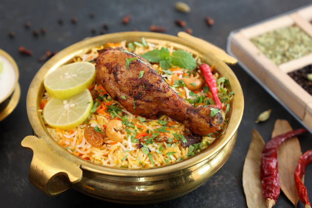
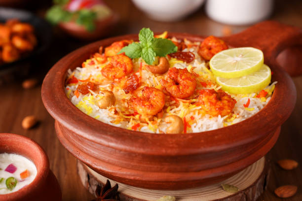
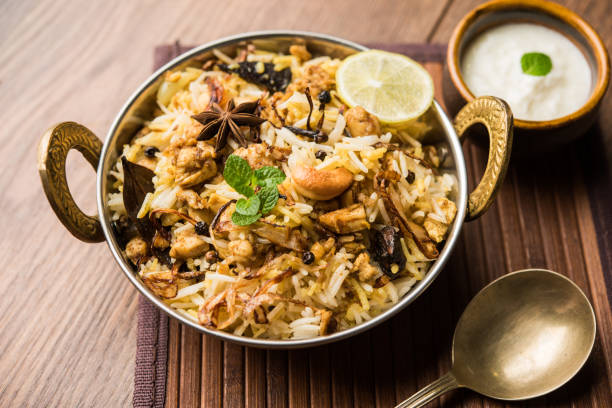
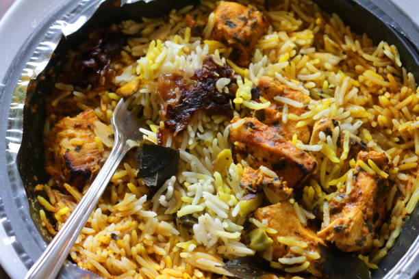
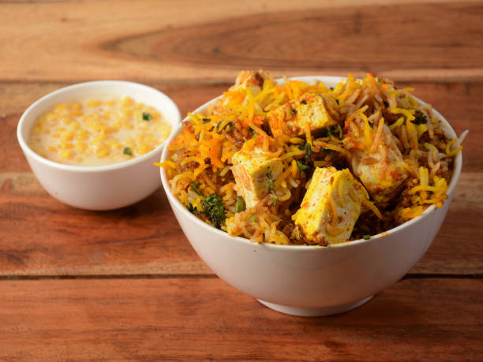
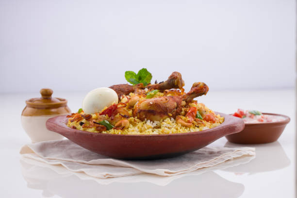
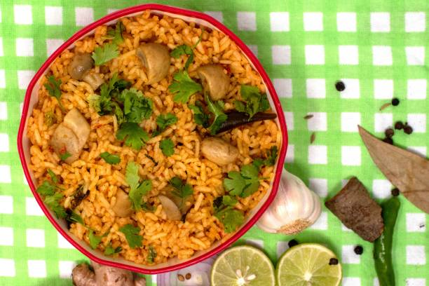
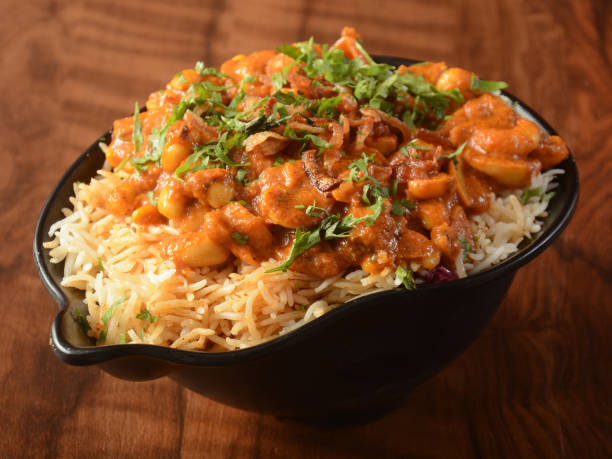
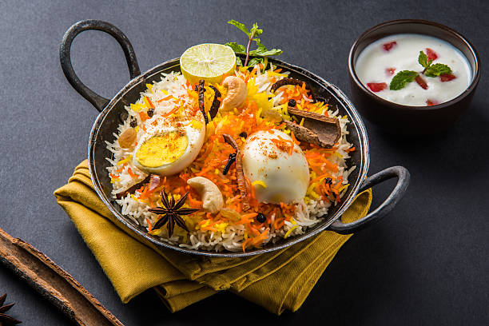
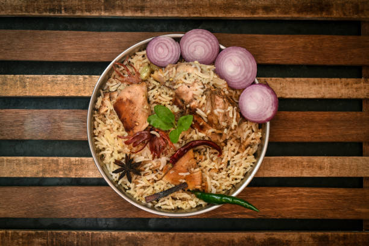

**Biryani Bliss** is a delightful culinary brand specializing in authentic and flavorful biryanis,
a renowned South Asian dish. Known for its rich aroma and vibrant taste, Biryani Bliss uses high-quality
ingredients, including basmati rice, succulent meats, fresh vegetables, and a blend of aromatic spices.
The brand prides itself on offering a diverse range of biryani varieties, catering to both traditional and
contemporary palates. Whether it's the classic Hyderabadi biryani or innovative fusion recipes,
Biryani Bliss ensures an exceptional dining experience that celebrates the rich culinary heritage of biryani.
-Menu-

Chicken Biryani
Marinate chicken in yogurt and spices, then layer it with partially cooked basmati rice,
caramelized onions, and fresh herbs in a pot. Cook on low heat until the chicken is tender
and the rice is fully cooked, allowing the flavors to meld together. Garnish with fried onions,
boiled eggs, and fresh cilantro before serving.
₹220
Rice: Long-grain Basmati
Meat: Chicken or Lamb
Spices: Saffron, Garam Masala
Aromatics: Onions, Garlic, Ginger
Chicken Tikka Biryani
Marinate chicken in yogurt, spices, and lemon juice, then grill or bake until charred and cooked through.
Layer the cooked chicken tikka with partially cooked basmati rice, caramelized onions, and fresh herbs in a pot.
Cook on low heat until the rice is fully done and flavors meld, then garnish with fried onions and fresh
cilantro before serving.
₹240
Rice: Long-grain Basmati
Meat: Chicken or Lamb
Spices: Saffron, Garam Masala
Aromatics: Onions, Garlic, Ginger
Mutton Biryani
Mutton Biryani is a rich and aromatic dish made by layering marinated, slow-cooked mutton with fragrant basmati rice.
The mutton is marinated in yogurt and a blend of spices like cinnamon, cloves, and cardamom, then cooked until tender.
The rice is partially cooked and layered with the mutton, fried onions, and fresh herbs such as mint and cilantro.
₹300
Rice: Long-grain Basmati
Meat: Mutton
Spices: Saffron, Garam Masala
Aromatics: Onions, Garlic, Ginger
Veg Biryani
Veg Biryani is a flavorful and aromatic dish made by layering cooked vegetables with fragrant basmati rice.
The vegetables, which can include potatoes, carrots, peas, and bell peppers, are sautéed with spices like cumin,
coriander, and turmeric for added flavor. The rice is partially cooked and then layered with the vegetables,
fried onions, and fresh herbs such as mint and cilantro.
₹200
Rice: Long-grain Basmati
Meat: No Meat
Spices: Saffron, Garam Masala
Aromatics: Onions, Garlic, Ginger
Fish Biryani
Fish Biryani is a delectable dish where tender fish pieces are layered with fragrant basmati rice.
The fish is marinated in a blend of spices, including turmeric, chili powder, and garam masala,
to enhance its flavor. The rice is partially cooked and then layered with the marinated fish,
caramelized onions, and fresh herbs like mint and cilantro.
₹320
Rice: Long-grain Basmati
Meat: Fish
Spices: Saffron, Garam Masala
Aromatics: Onions, Garlic, Ginger

Prawns Biryani
Prawn Biryani is a tantalizing dish where succulent prawns are layered with aromatic basmati rice.
The prawns are marinated in a flavorful blend of spices such as turmeric, cumin, and ginger-garlic paste,
enhancing their natural taste. The rice is partially cooked and then layered with the marinated prawns,
caramelized onions, and fresh herbs like mint and cilantro.
₹280
Rice: Long-grain Basmati
Meat: No meat, Prawns
Spices: Saffron, Garam Masala
Aromatics: Onions, Garlic, Ginger

Kheema Biryani
Kheema Biryani is a flavorful and hearty dish where spiced minced meat, typically lamb or goat, is layered with
fragrant basmati rice. The minced meat is cooked with a blend of aromatic spices, onions, tomatoes, and fresh
herbs like cilantro and mint, creating a rich and savory filling. The rice is partially cooked and then layered
with the cooked kheema mixture, caramelized onions, and fresh herbs.
₹320
Rice: Long-grain Basmati
Meat: Chicken or Mutton
Spices: Saffron, Garam Masala
Aromatics: Onions, Garlic, Ginger

Fry piece Biryani
Fry Piece Biryani is a delightful variation of traditional biryani where marinated and fried pieces of chicken,
fish, or vegetables are used as the main ingredient. The fry pieces, whether chicken, fish, or vegetables,
are marinated in a flavorful blend of spices, yogurt, and lemon juice, then fried until golden brown and crispy.
₹250
Rice: Long-grain Basmati
Meat: Chicken or Mutton
Spices: Saffron, Garam Masala
Aromatics: Onions, Garlic, Ginger

Panner Biryani
Paneer Biryani is a delectable vegetarian dish where cubes of paneer (Indian cottage cheese) are layered with fragrant basmati rice.
The paneer is marinated in a mixture of yogurt and spices, enhancing its flavor and tenderness. The rice is partially cooked
and then layered with the marinated paneer, caramelized onions, and a medley of vegetables such as bell peppers, peas, and
carrots.
₹250
Rice: Long-grain Basmati
Meat: No Meat, Panner..
Spices: Saffron, Garam Masala
Aromatics: Onions, Garlic, Ginger

Ulavacharu Biryani
Ulava Charu Biryani is a unique and flavorful biryani variety originating from the Telugu-speaking regions of India, particularly Andhra Pradesh.
It features ulava charu, a tangy and spicy horse gram stew, as a key ingredient in the biryani preparation. The ulava charu is cooked with aromatic spices,
tamarind, and other flavorings to create a rich and flavorful base. Fragrant basmati rice is partially cooked and then layered with the ulava charu, along
with marinated chicken or mutton, caramelized onions, and fresh herbs.
₹300
Rice: Long-grain Basmati
Meat: Chicken
Spices: Saffron, Garam Masala
Aromatics: Onions, Garlic, Ginger

Mushroom Biryani
Mushroom Biryani is a delightful vegetarian dish where tender mushrooms are layered with fragrant basmati rice. The mushrooms are sautéed with a blend of
aromatic spices, onions, tomatoes, and ginger-garlic paste, enhancing their natural flavor. Fragrant basmati rice is partially cooked and then layered with
the cooked mushrooms, caramelized onions, and fresh herbs like mint and cilantro.
₹350
Rice: Long-grain Basmati
Meat: No Meat, Mushrooom
Spices: Saffron, Garam Masala
Aromatics: Onions, Garlic, Ginger

Kaju Biryani
Kaju Biryani is a luxurious and flavorful dish where fragrant basmati rice is layered with cashews (kaju) and an
assortment of aromatic spices. The cashews are sautéed until golden brown, enhancing their nutty flavor and adding
a delightful crunch to the biryani. Fragrant basmati rice is partially cooked and then layered with the fried cashews,
caramelized onions, and a medley of vegetables or meat.
₹320
Rice: Long-grain Basmati
Meat: No Meat, Kaju...
Spices: Saffron, Garam Masala
Aromatics: Onions, Garlic, Ginger

Egg Biryani
Egg Biryani is a flavorful and hearty dish where boiled eggs are layered with fragrant basmati rice.
The boiled eggs are often marinated in a mixture of yogurt and spices, enhancing their flavor and tenderness.
Fragrant basmati rice is partially cooked and then layered with the boiled eggs, caramelized onions,
and a medley of aromatic spices.
₹200

Chicken Mandi
Chicken Mandi is a traditional Arabian dish characterized by tender, marinated chicken served with fragrant rice.
The chicken is typically marinated in a blend of aromatic spices such as cardamom, cinnamon, cloves, and bay
leaves, along with yogurt and lemon juice, imparting rich flavor and tenderness. The marinated chicken is then
slow-cooked or roasted, either in a tandoor oven or over charcoal, to achieve a smoky and succulent texture.
₹240
-Soft Drinks-
Sprite
Thumpsup
Maaza
Fanta
Mountain Dew
CocaCola
Limca
Pepsi
-Gallery-
Reviews
Restaurant reviews provide valuable feedback on the dining experience, helping potential customers make
informed decisions. They highlight aspects such as food quality, service, ambiance, and overall satisfaction.
Positive reviews can boost a restaurant's reputation, while constructive criticism offers opportunities
for improvement.
Our Story
At Biryani Bliss, our journey began with a passion for culinary excellence and a commitment to creating
memorable dining experiences. Founded in 2015, we blend traditional recipes with modern techniques,
using the finest ingredients to craft dishes that delight the senses. Our dedicated team strives to provide
exceptional service in a warm and inviting atmosphere, making every visit a celebration of food, family,
and community.
Jobs
Join our team at Biryani Bliss and become part of a dynamic and passionate group dedicated to culinary excellence
and exceptional service. We offer various positions, from kitchen staff and chefs to servers and management,
with opportunities for growth and development. Our workplace fosters a supportive and inclusive environment
where creativity and dedication are valued. If you have a love for food and hospitality, we'd love to hear
from you! Apply now and be a part of our culinary journey.
-Jobs-
Job Title: Line Cook
Description: As a Line Cook at Biryani Bliss, you'll be responsible for preparing high-quality meals
in accordance with our recipes and standards. You'll work in a fast-paced environment, ensuring that
orders are completed in a timely manner and maintaining cleanliness and organization in the kitchen.
Ideal candidates have prior cooking experience, strong multitasking skills, and a passion for food.
Responsibilities:
Prepare and cook menu items according to recipes and standards.
Ensure food quality and presentation meet restaurant expectations.
Maintain a clean and organized workstation.
Assist with inventory management and stock rotation.
Adhere to all food safety and sanitation guidelines.
Requirements:
Previous experience as a line cook or similar role.
Knowledge of kitchen equipment and cooking techniques.
Ability to work in a fast-paced environment.
Strong attention to detail and organizational skills.
Flexibility to work various shifts, including weekends and holidays.
Job Title: Server
Description: As a Server at Biryani Bliss, you'll be the face of our restaurant, providing excellent
customer service to our guests. Your role will involve taking orders, serving food and drinks, and
ensuring a positive dining experience. Ideal candidates have strong communication skills, a friendly
demeanor, and a commitment to customer satisfaction.
Responsibilities:
Greet and seat customers promptly.
Take accurate food and drink orders and relay them to the kitchen.
Serve food and beverages in a timely manner.
Check in with guests to ensure satisfaction with their meals.
Handle customer complaints and provide appropriate solutions.
Process payments and handle cash transactions.
Requirements:
Previous experience as a server or in a customer service role.
Excellent communication and interpersonal skills.
Ability to multitask and work efficiently under pressure.
Strong attention to detail and accuracy.
Flexibility to work various shifts, including evenings and weekends.
Job Title: Host/Hostess
Description: As a Host/Hostess at Biryani Bliss, you'll be responsible for welcoming guests and
managing reservations. You'll ensure that guests are seated promptly and provide them with menus.
Ideal candidates are friendly, organized, and have excellent customer service skills.
Responsibilities:
Greet guests as they arrive and manage the waiting list.
Escort guests to their tables and provide menus.
Maintain an organized and clean reception area.
Assist with phone reservations and inquiries.
Coordinate with servers to ensure efficient table turnover.
Handle customer inquiries and provide information about the menu and restaurant.
Requirements:
Previous experience in a customer service role.
Strong communication and organizational skills.
Friendly and professional demeanor.
Ability to multitask and handle busy periods effectively.
Flexibility to work various shifts, including evenings and weekends.
Job Title: Dishwasher
Description: As a Dishwasher at Biryani Bliss, you'll play a crucial role in maintaining a clean and
sanitary kitchen. You'll be responsible for cleaning dishes, utensils, and kitchen equipment, as
well as assisting with kitchen organization. Ideal candidates are hardworking, reliable, and have a
keen eye for cleanliness.
Responsibilities:
Wash and sanitize dishes, utensils, and kitchen equipment.
Maintain cleanliness and organization of the dishwashing area.
Assist with kitchen cleaning tasks, such as mopping and trash disposal.
Ensure that clean dishes and utensils are readily available for use.
Follow all food safety and sanitation guidelines.
Requirements:
Previous experience in a similar role is a plus.
Strong attention to detail and cleanliness.
Ability to work in a fast-paced environment.
Reliability and strong work ethic.
Flexibility to work various shifts, including evenings and weekends.
-Reviews-
Review by Lohith
"Absolutely delightful! The flavors are rich and authentic, making it the best biryani I've ever had."
Review by Sai
"Aromatic and perfectly spiced, Biryani Bliss lives up to its name. Highly recommended for biryani lovers!"
Review by Srinath
"The biryani at Biryani Bliss is a symphony of spices and textures. A must-try for anyone craving a hearty meal."
Review by Sharath
"Incredible biryani with generous portions and just the right amount of heat. Truly blissful dining experience!"
Review by Rohith
"Biryani Bliss offers a mouthwatering mix of tender meat and fragrant rice. A flavorful journey worth every bite."
Review by Nandhini
"Exquisite biryani with layers of complex flavors. Each bite transports you to culinary heaven!"
Review by Rachana
"Biryani Bliss nails the perfect balance between spice and savoriness. A must-visit for food enthusiasts!"
Review by Mahesh
"The biryani here is a feast for the senses—aromatic, vibrant, and deliciously satisfying."
Review by Archana
"Every dish at Biryani Bliss is a testament to authentic culinary artistry. A true gem for biryani fans!"
-The Journey of Biryani Bliss-
Origins and Vision:
Biryani Bliss began with a singular vision: to bring the authentic flavors of traditional biryani to the modern palate.
Our founders, passionate food enthusiasts, were inspired by the rich culinary heritage of South Asia, where biryani
is not just a dish but a celebration of culture and tradition. They set out on a mission to perfect the art of biryani,
ensuring that every bite captures the essence of its origins while appealing to contemporary tastes. This journey
started in a small kitchen, where countless hours were spent experimenting with spices, ingredients, and cooking
techniques to create a biryani that could stand out in both taste and quality.
Growth and Expansion
As word spread about our delicious biryanis, Biryani Bliss quickly grew from a humble beginning into a beloved brand.
The dedication to quality and authenticity earned us a loyal customer base, and soon we were able to open multiple
outlets. Each restaurant maintained the same high standards, offering a variety of biryanis that cater to different
preferences, from classic chicken and mutton to innovative vegetarian and seafood options. Our menu expanded to
include side dishes and desserts, all crafted with the same attention to detail and commitment to excellence.
Commitment to Excellence
Today, Biryani Bliss stands as a testament to our unwavering commitment to culinary excellence. We continue to source
the finest ingredients and uphold traditional cooking methods, ensuring that every dish we serve is a true
representation of our passion for biryani. Our chefs are trained in the art of biryani making, and we constantly
innovate to keep our offerings fresh and exciting. As we look to the future, we remain dedicated to our founding
principles, striving to bring the joy and richness of biryani to more people around the world while staying true
to our roots.